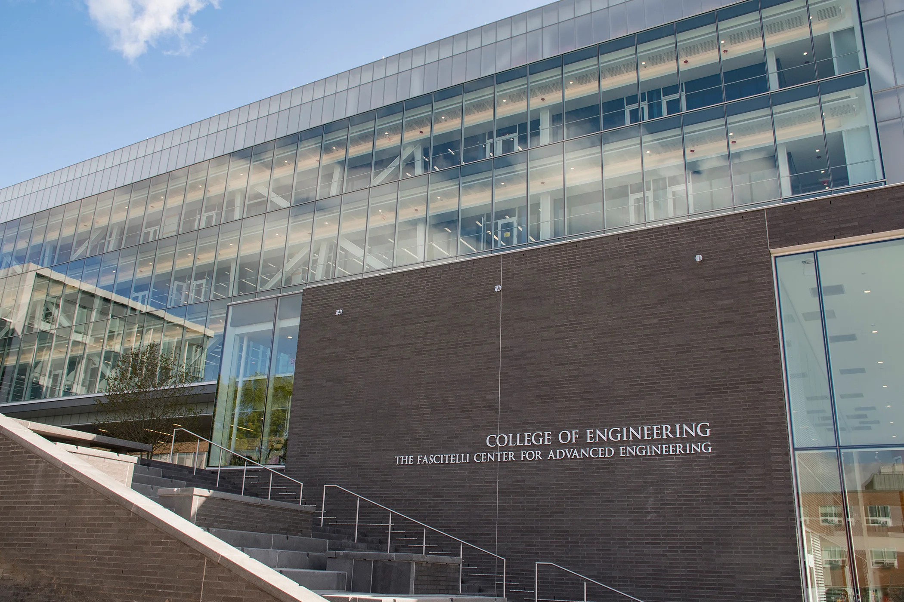

Capstone Room
FCAE 180A · Kingston, RI 02881
Primary manufacturing testbed featuring Niryo Ned2 robots, xArm collaborative robots,
conveyor belts, an AVRS rotating inventory system, Alvix robots, CNC machines with
integrated sensors, and laser cutters. Capstone seniors and lab members work here on
hands-on Industry 4.0 projects.

Vehicular Vision & Tracking Lab
KIRK Resources · Kingston, RI 02881
Houses vision-focused research alongside higher-powered laser cutting and 3-D printing
resources used across multiple lab projects.
Graduate Lounge
FCAE, Floor 2 · Kingston, RI 02881
Collaborative workspace for graduate students — writing, analysis, and project coordination.
Lab Support Room
FCAE · Kingston, RI 02881
Additional workspace and storage supporting ongoing testbed research and equipment maintenance.